FIRST / FTC Robotics
FTC Robotics
Competition robot design, build, and testing with Team #18263 High Voltage. This section focuses on my engineering contributions: modeling most of the custom robot architecture in CAD, making packaging and mechanism decisions during the build, and contributing to the control code that connected sensing, shooter behavior, and field operation.
At a Glance
My work within a team-built competition robot
I used system-level CAD to connect mechanism choices to the physical robot, then contributed during fabrication, testing, and selected controls work. Awards listed below are team results.
My contribution
Subsystem CAD, intake and transfer geometry, turret and shooter packaging, custom plates, build decisions, and selected sensor and control logic.
Constraint
The intake, transfer path, turret, shooter, sensors, and drivetrain had to share a compact competition envelope while remaining serviceable.
Decision
I used the full CAD assembly to resolve ball-path alignment, mechanism interference, mounting access, and subsystem integration before and during fabrication.
Team result
The integrated robot combined automated aiming, sensor-triggered behavior, autonomous scoring work, and a field-tested mechanical system.
Next step
Continue field validation of subsystem timing, scoring consistency, and driver-facing behavior under match conditions.
My Contributions
My work centered on subsystem CAD, mechanical packaging, build decisions, and selected software/control logic across the robot's intake, transfer, turret, shooter, sensing, and field behavior.
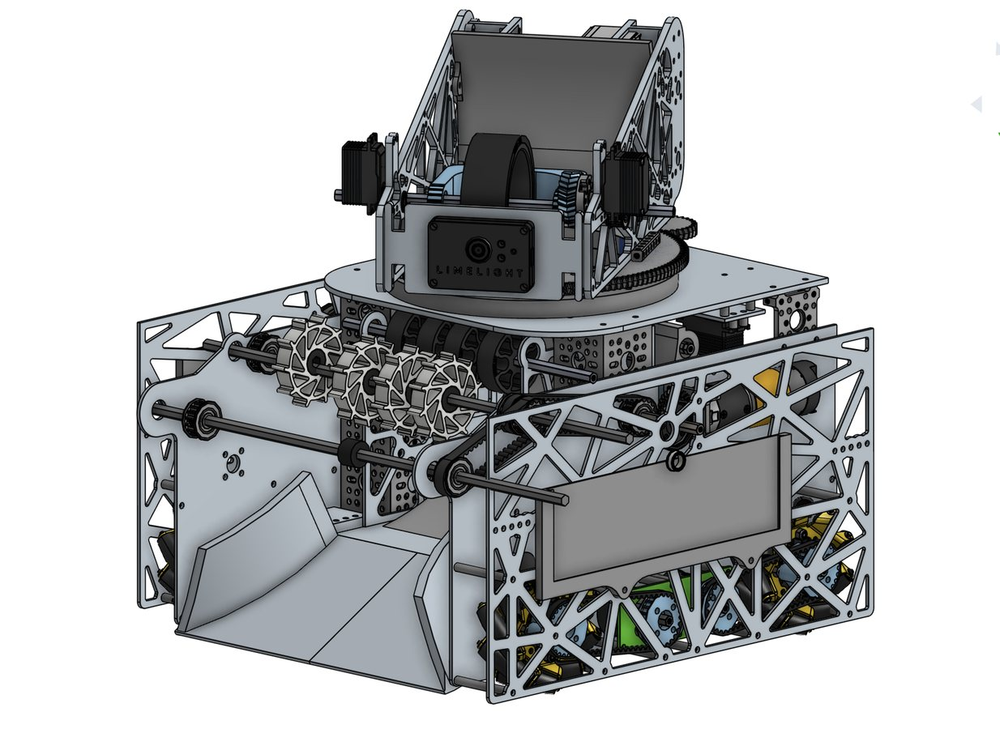
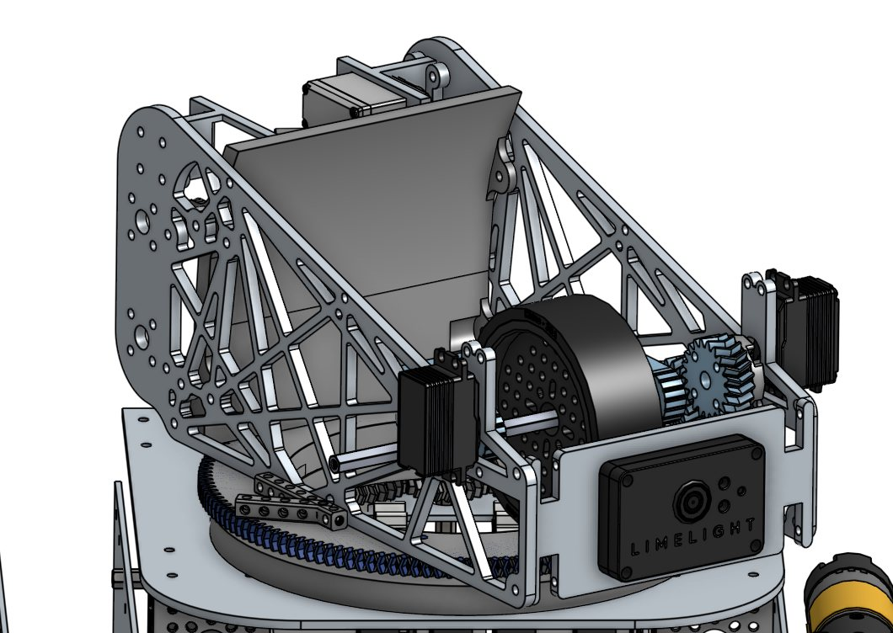
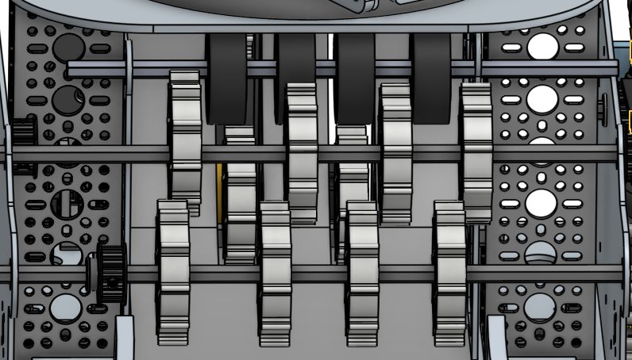
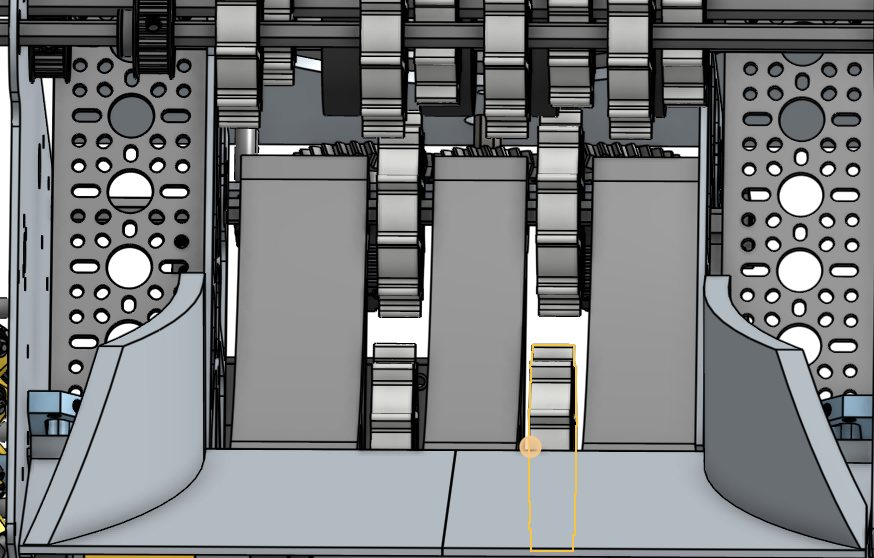
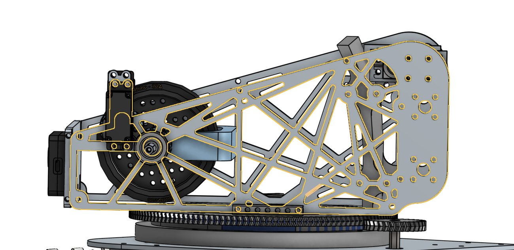
Awards & Recognition
Team awards
High Voltage has built on several seasons of competition experience, carrying forward engineering documentation, outreach, robot design, and mentorship across the team.
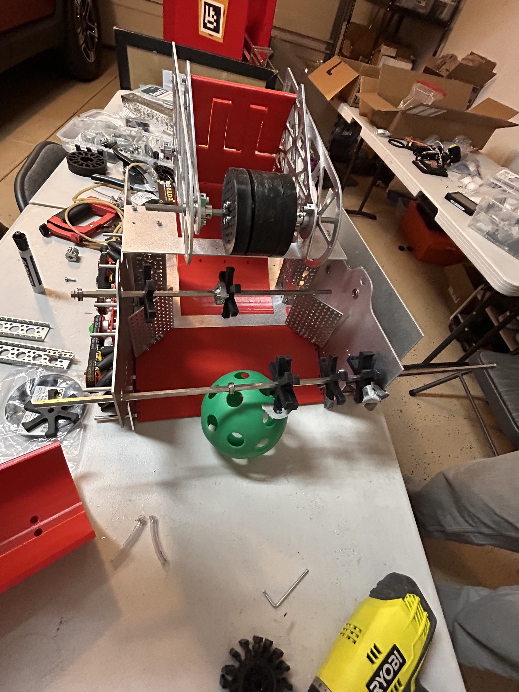
Phase 01 / Preliminary Design
Initial chassis and shooter assembly
I developed the initial mechanical architecture in Onshape, establishing the chassis, shooter positioning, and preliminary ball-transfer geometry before integrating a complete intake. This prototype provided a physical reference for evaluating subsystem packaging and mechanical interfaces.
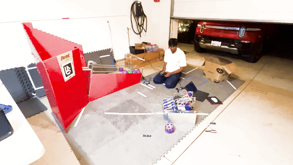
Phase 02 / Trajectory Calibration
Initial shooter kinematics testing
Conducted preliminary shooting tests to calibrate the kinematic calculations used to determine the required launch angle based on distance from the target. Physical testing helped establish the relationship between theoretical ball trajectories and actual shooter behavior.
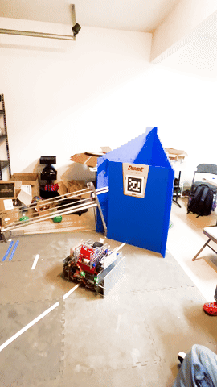
Phase 03 / Controls Refinement
Shooter algorithm validation
Continued refining the shooter control code through repeated physical launch tests. Observed discrepancies between calculated and actual trajectories informed adjustments to the hood-angle calculations, improving shooting consistency across different distances from the target.
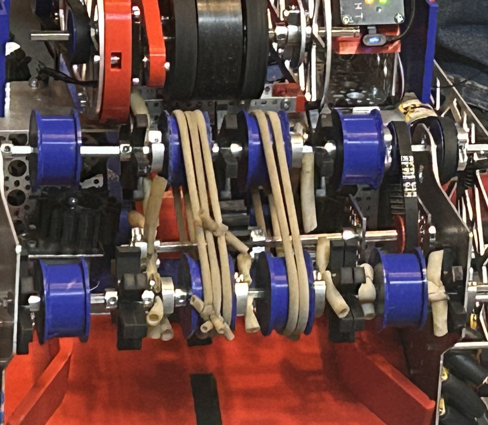
Phase 04 / Intake Iteration
Compliant rubber-band intake
The intermediate intake used flexible rubber bands to acquire and transport balls. Additional rubber wheels increased friction and partially improved acquisition, but inconsistent contact between the intake and ball surfaces continued to cause slippage. These limitations motivated a custom molded wheel design.
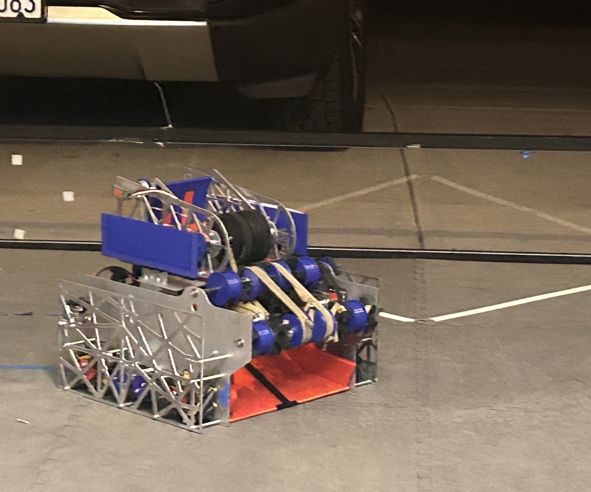
Phase 05 / Meet 3 Robot
Integrated intermediate competition robot
This iteration introduced lighter structural plates, a lowered intake ramp, more reliable internal ball transfer, and a functional adjustable shooter hood for scoring from different distances.
However, intake slippage and slow transfer to the elevated shooter limited scoring throughput to approximately one shot every three seconds, establishing the primary performance constraint for the final redesign.
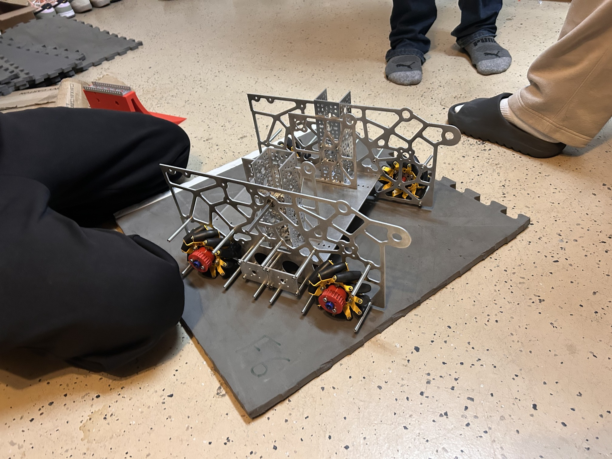
Phase 06 / Structural Redesign
Compact and lightweight chassis
I redesigned the chassis in Onshape with a narrower footprint and pocketed structural side plates. The reduced dimensions improved maneuverability around field obstacles, while removing unnecessary material reduced drivetrain load and supported faster field traversal.
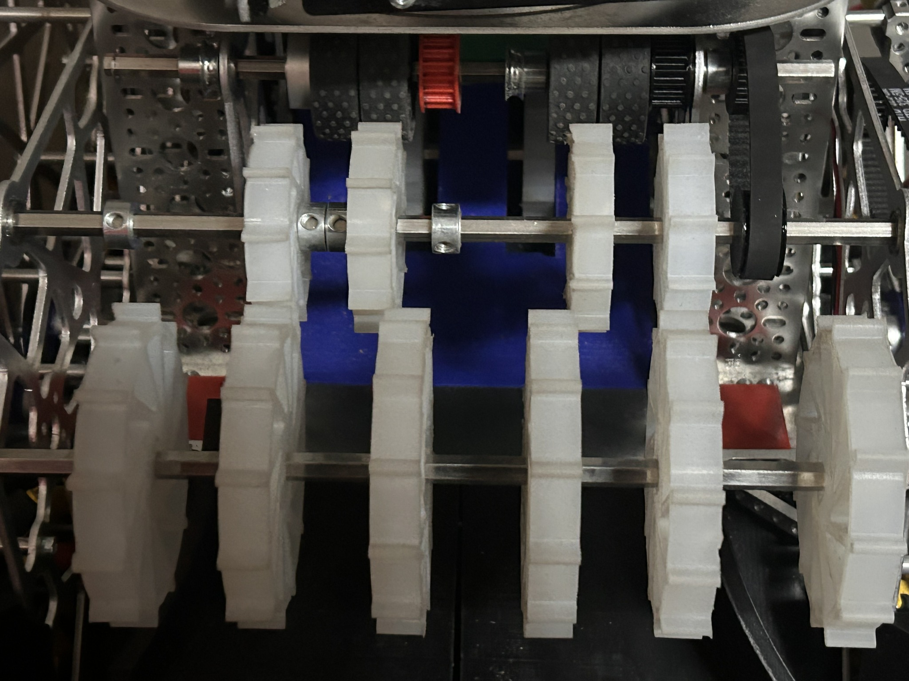
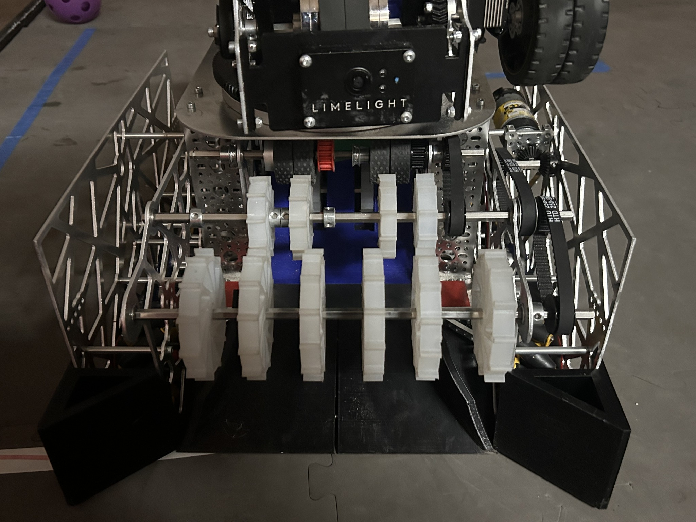
Phase 07 / Custom Component Manufacturing
High-friction silicone intake wheels
I designed custom intake wheel geometry and 3D-printed molds for casting silicone wheels with controlled dimensions and high-friction contact surfaces.
Two rows of custom wheels maintained continuous ball contact, while a third row of smaller Gecko wheels accelerated transfer into the internal mechanism. This addressed the slippage and inconsistent acquisition of earlier rubber-band designs.
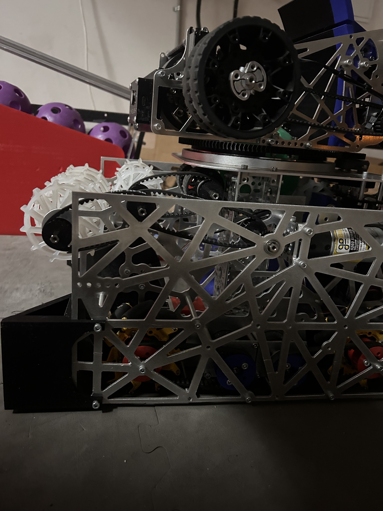
Phase 08 / Turret and Shooter
Independent aiming and flywheel optimization
I designed a rotating turret that allowed target alignment independently of chassis orientation, minimizing repositioning between ball acquisition and scoring.
Weighted flywheels increased rotational inertia to reduce speed loss between launches. A 1:1 transmission ratio was retained as the preferred balance between torque and rotational speed.
Phase 09 / Field Testing
System-level validation
Field testing evaluated the interaction between the intake, active transfer, shooter, turret, sensing, and control software under realistic competition constraints. Testing informed refinements to subsystem timing, automated aiming, and scoring consistency.
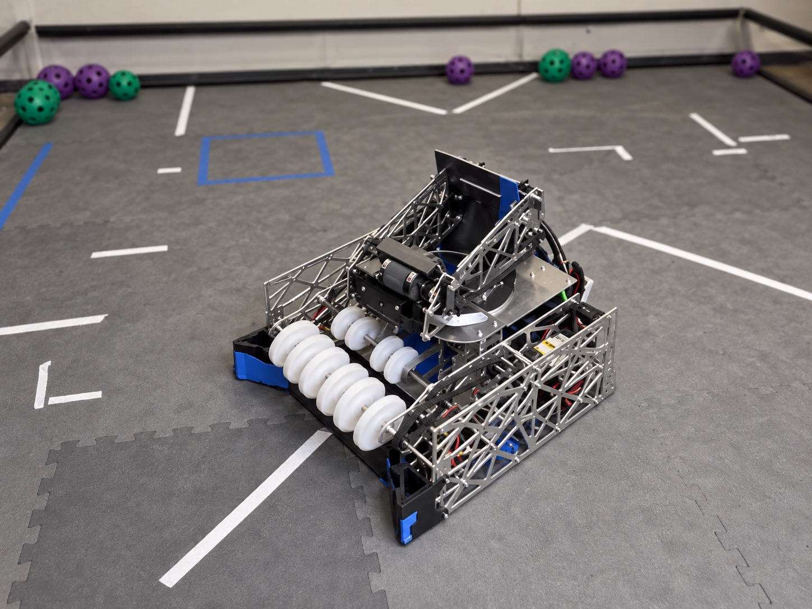
Phase 10 / Final Competition Robot
Integrated competition platform
The final robot combined the compact chassis, custom molded silicone intake wheels, active transfer mechanism, rotating turret, adjustable shooter hood, and refined control software. I led the system-level mechanical design in Onshape, with peer assistance on select refinements.
~3 s → ~1 s
Time between consecutive shots
~67%
Reduction in time between shots
~3×
Consecutive shooting rate
Final pre-competition testing demonstrated the combined improvements in ball acquisition, transfer speed, shooting consistency, and independent target alignment.